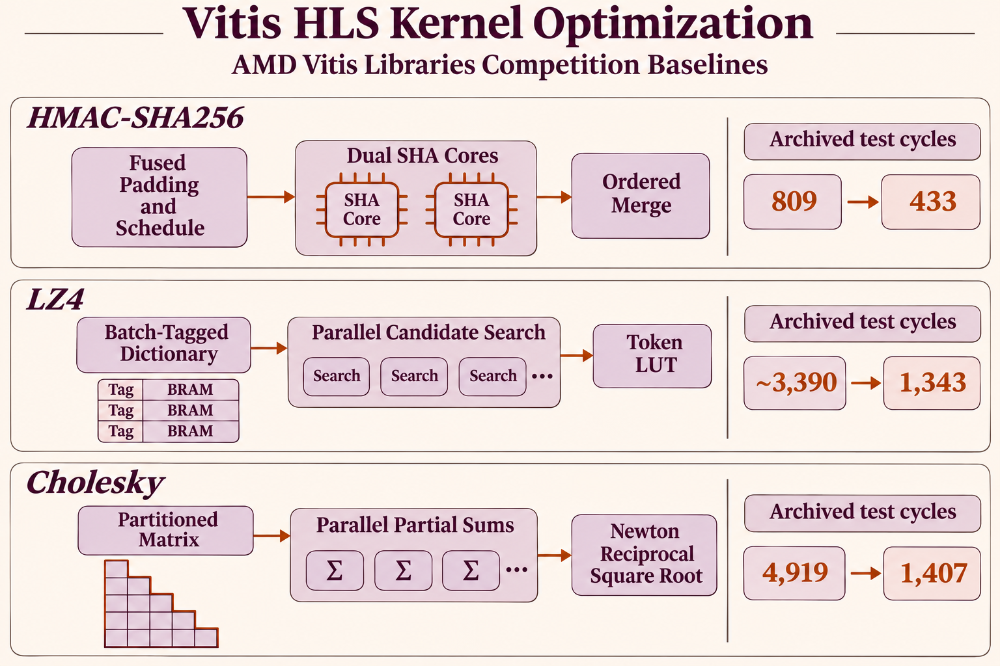
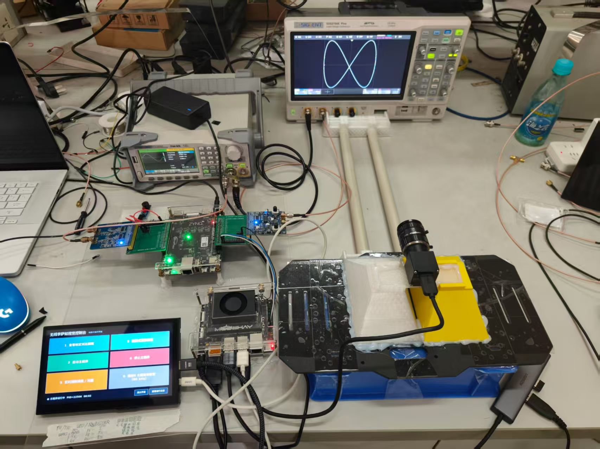
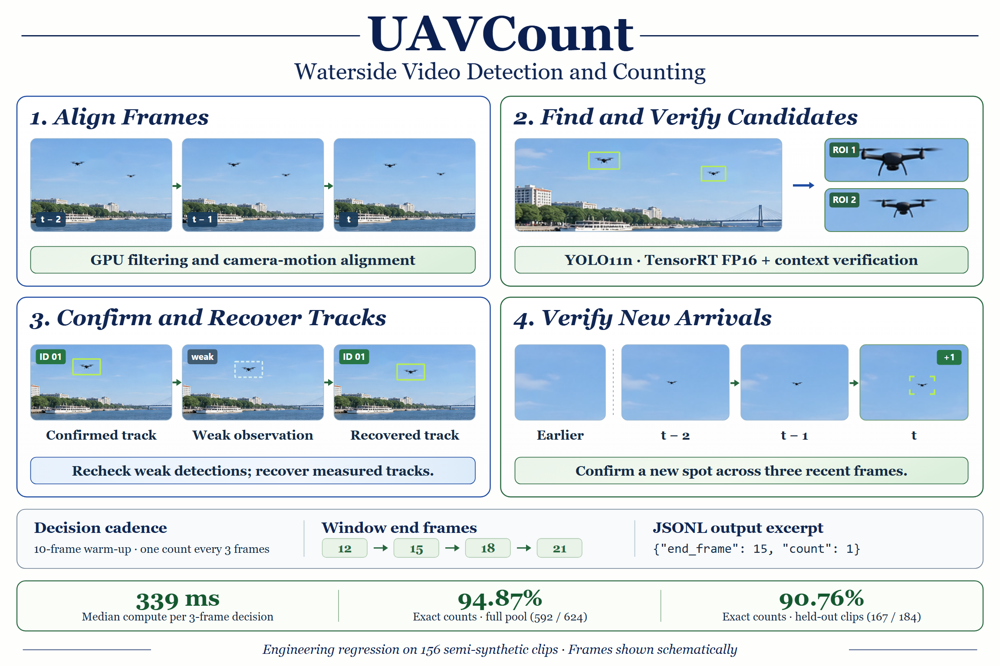
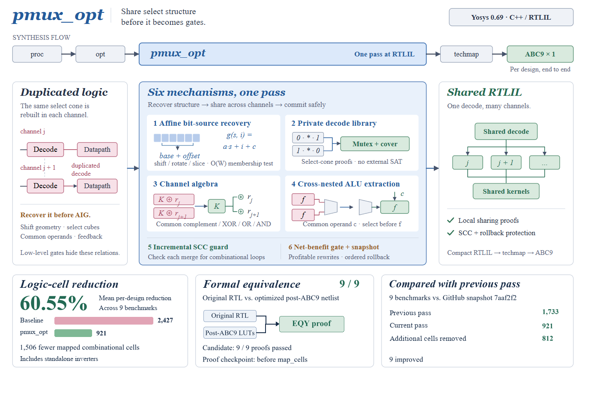

Ethereal
南京理工大学 · 通信工程 · 大四
本科阶段的工程实践涉及 FPGA 图像处理、数字频谱分析与信号跟踪。
- FPGA 与数字系统
- 数字信号处理
- 量子计算硬件
教育经历 Education
- 南京理工大学
- 通信工程
- 东南大学
- 保研-网络安全
实习经历 Experience

太一量生（上海）量子科技有限公司
控制算法工程师 · –至今
- CXP 采集与显示
在 ZCU216 上实现两版 CXP 采集与显示系统，分别对接滨松 C15550-22UP 相机和星测电子 PCIe-1005 CXP 模拟卡。设计 CXP 至 AXI-Stream 转换和 FIFO 背压缓冲，搭建 SGDMA 写入 PL DDR、CDMA 搬运至 PS DDR 的两级通路，并实现 AXI DMA 直写 PS DDR 的备选路径。在 PetaLinux 下通过 UDP 回显图像。
- HLS 原子检测
设计 4-bank 行分片 DATAFLOW 流水线，通过三副本行缓存和冲突仲裁解决多读口冲突，实现窗口提取与乘加流水化。用二分法预计算判决边界，将实时浮点比较替换为整数判决。在 300 MHz 下，单帧延迟为 0.268 ms。
- HLS 原子重排
将行列扫描的确定性分通道策略实现为 HLS 流水线，依次执行分类、清空通道、批量停靠和缺失补偿。重排受 AOD 双轴各 16 音调上限约束，按波控接口输出每条 5 拍、每拍 512 bit 的 AXI-Stream 指令。
- AOD 多音调控制
在 ZCU216 上实现 X/Y 双轴多音调 RF 波形合成。每轴支持 16 音调，通过四路并行 CORDIC 生成连续 I/Q 样本，经多音调求和、包络整形后打包送入 RF-DAC，支持频率配置、扫频与包络控制。
工程项目 Projects



本科毕业设计
UAVCount · 水岸无人机检测与计数
面向水岸场景的连续视频，结合候选区域提取、YOLO11n 检测、上下文过滤和跨帧关联，输出无人机位置与架数。

Logic Synthesis
Yosys PMUX 结构优化
第十届全国大学生FPGA创新赛-中科亿海微赛道（Yosys PMUX 优化）-入围线下
论文 Publications
DAC 2027 · 在投
A Streamed Neutral Atom-State Reconstruction Architecture for Quantum Computing
This paper presents an FPGA-based streaming architecture that reconstructs atom occupancy from fluorescence images in neutral-atom quantum computers. It receives pixels in camera scanline order, reuses overlapping pixel windows for neighboring atom sites on chip, and determines site occupancy while image data is still arriving to reduce feedback latency.
竞赛与获奖 Competitions & Awards
- 2026 全国大学生集成电路创新创业大赛 · 中科亿海微赛道 · 全国三等奖
- 2026 全国大学生电子设计竞赛江苏赛区 F 题 · 省一等奖
- 2026 FPGA 创新设计竞赛 · PMUX 项目入围线下赛
- 2025 FPGA 创新设计竞赛 AMD 赛道 · 全国二等奖